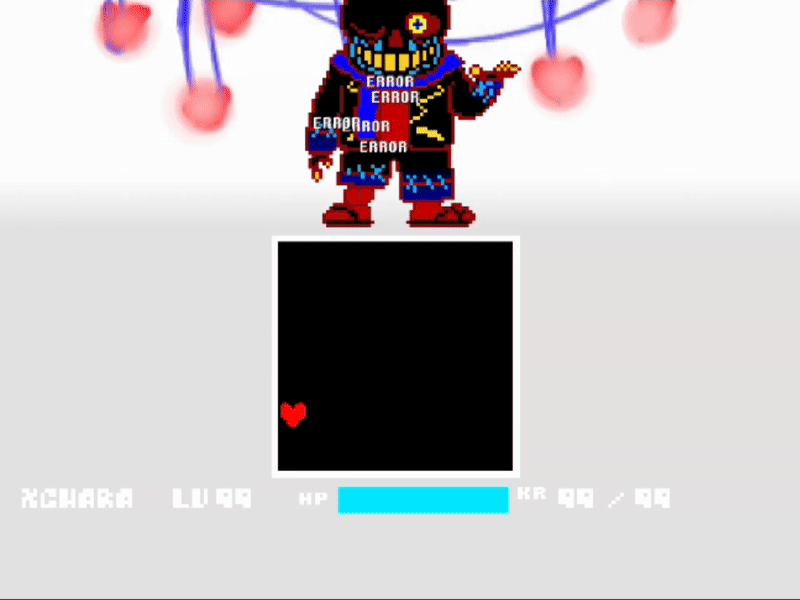

Dicas
Ataques vermelhos ou brancos causam o dano normalmente, sem condições alteradas.
Ataques azuis causam dano quando você está em movimento e está segurando uma das teclas de movimento da alma, ou seja,
se você estiver se movendo sem usar as teclas de movimento, não sofrerá dano.
Ataques laranjas causam dano quando você não está em movimento e não está segurando uma das teclas de movimento da alma,
ou seja, se você estiver se movendo e usar as teclas de movimento, não sofrerá dano.

Ataques muito azuis reduzem todo o seu HP, ou seja, te matam instantaneamente